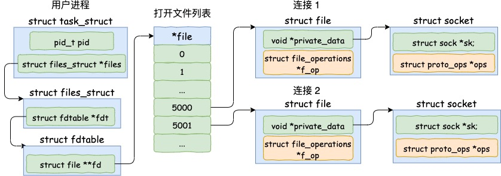
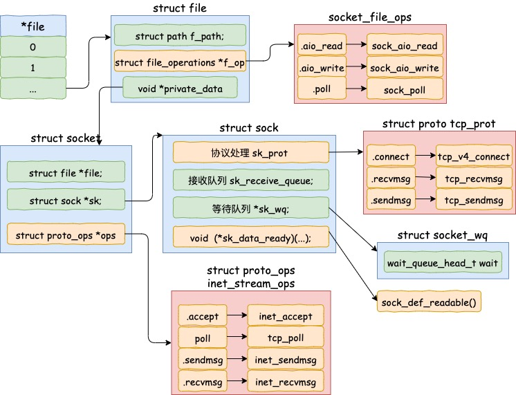
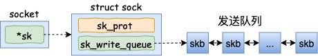
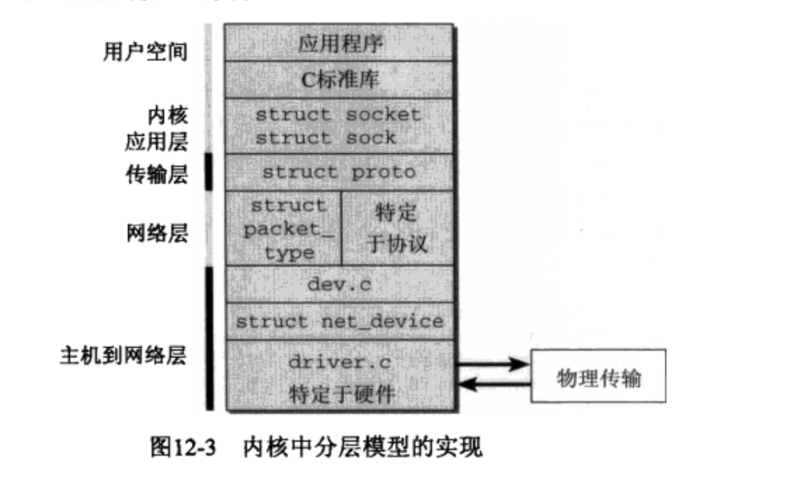
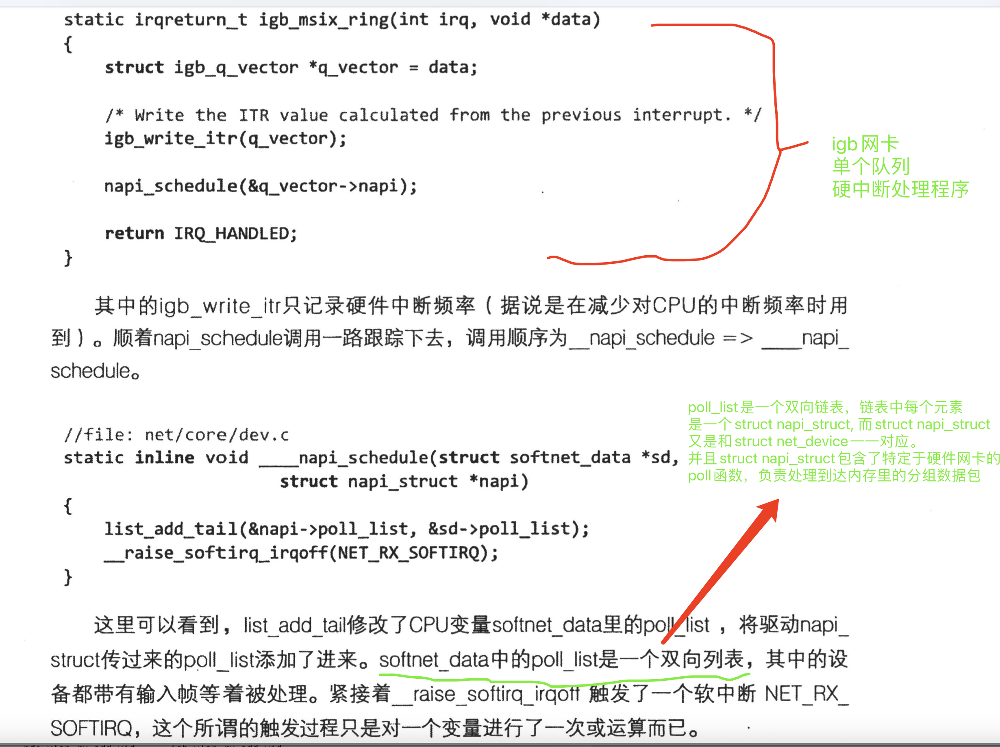
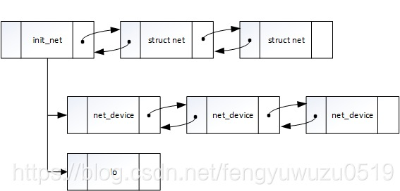

概述
一 网络子系统核心描述符
- struct msghdr
- struct socket VFS 层面的 socket 描述符, 有对应的 struct socket_file_ops, 用于存放对应的 read,write,poll 操作
- struct sock 协议层面的 socket 描述符
- struct proto 协议, 比如 tcp 协议. 有对应的 struct proto_ops, 可以用于存放协议对应的 accept,poll,sendmsg,recvmsg 函数
1 sk_buff 结构体
sk_buff 是 Linux 网络中最核心的结构体，它用来管理和控制接收或发送数据包的信息。 各层协议都依赖于 sk_buff 而存在。 内核中 sk_buff 结构体在各层协议之间传输不是用拷贝 sk_buff 结构体，而是通过增加协议头和移动指针来操作的。如果是从 L4 传输到 L2，则是通过往 sk_buff 结构体中增加该层协议头来操作；如果是从 L4 到 L2，则是通过移动 sk_buff 结构体中的 data 指针来实现，不会删除各层协议头。这样做是为了提高 CPU 的工作效率。
详细代码
include/linux/skbuff.h(sk_buff 结构定义和 sk_buff 宏)
struct sk_buff {
/* These two members must be first. */
struct sk_buff *next;
struct sk_buff *prev;
struct sock *sk;
struct skb_timeval tstamp;
struct net_device *dev;
struct net_device *input_dev;
union {
struct tcphdr *th;
struct udphdr *uh;
struct icmphdr *icmph;
struct igmphdr *igmph;
struct iphdr *ipiph;
struct ipv6hdr *ipv6h;
unsigned char *raw;
} h;
union {
struct iphdr *iph;
struct ipv6hdr *ipv6h;
struct arphdr *arph;
unsigned char *raw;
} nh;
union {
unsigned char *raw;
} mac;
struct dst_entry *dst;
struct sec_path *sp;
....// 更多成员
}
2 struct proto tcp_prot
在发送数据之前，我们往往还需要一个已经建立好连接的 socket。
我们就以开篇服务器缩微源代码中提到的 accept 为例，当 accept 之后，进程会创建一个新的 socket 出来，然后把它放到当前进程的打开文件列表中，专门用于和对应的客户端通信。
假设服务器进程通过 accept 和客户端建立了两条连接，我们来简单看一下这两条连接和进程的关联关系。

其中代表一条连接的 socket 内核对象更为具体一点的结构图如下。

从上面这个图得到如下结论:
- 内核中不同的协议是使用
struct proto结构体表示的, 比如 tcp 协议是使用struct proto tcp_prot表示. -
- 按照经典的描述符+ops思想, 对应协议的操作能力是用结构体
struct proto_ops表示, 比如 tcp 协议的一些操作是用struct proto_ops inet_stream_ops结构体表示.
- 按照经典的描述符+ops思想, 对应协议的操作能力是用结构体
-
struct proto udp_prot = {定义在net/ipv4/udp.c:2650
-
struct proto tcp_prot = {定义在net/ipv4/tcp_ipv4.c:2447
-
struct proto {定义在include/net/sock.h:1048
3 用户的 tcp 发送队列是一个链表
skb 是 struct sk_buff 对象的简称，用户的发送队列就是该对象组成的一个链表。

4 struct sock 讲解
- struct socket 是在虚拟文件系统上被创建出来的，可以把它看成一个文件。
- struct sock 是网络层对于 socket 的表示，结构体比较庞大.
socket 和 sock 是同一事物的两个侧面，为什么不把两个数据结构合并成一个呢?
- 这是因为 socket 是 inode 结构中的一部分，即把 inode 结 构内部的一个 union 用作 socket 结构。由于插口操作的特殊性，这个数据结构中需要有大量的结构成分，如果把这些成分全部放到 socket 结构中，则 inode 结构中的这个 union 就会变得很大，从而 inode 结构也会变得很大，而对于其他文件系统这个 union 是不需要这么大的， 所以会造成巨大浪费，系统中使用 inode 结构的数量要远远超过使用 socket 的数量，故解决的办法就是把插口分成两部分，把与文件系 统关系密切的放在 socket 结构中，把与通信关系密切的放在另一个单独结构 sock 中；
struct inode {
.....................
union {
struct ext2_inode_info ext2_i;
struct ext3_inode_info ext3_i;
struct socket socket_i;
.....................
} u;
};
struct socket
{
socket_state state; // 该state用来表明该socket的当前状态
typedef enum {
SS_FREE = 0, /* not allocated */
SS_UNCONNECTED, /* unconnected to any socket */
SS_CONNECTING, /* in process of connecting */
SS_CONNECTED, /* connected to socket */
SS_DISCONNECTING /* in process of disconnecting */
} socket_state;
unsigned long flags; //该成员可能的值如下，该标志用来设置socket是否正在忙碌
#define SOCK_ASYNC_NOSPACE 0
#define SOCK_ASYNC_WAITDATA 1
#define SOCK_NOSPACE 2
struct proto_ops *ops; //依据协议邦定到该socket上的特定的协议族的操作函数指针，例如IPv4 TCP就是inet_stream_ops
struct inode *inode; //表明该socket所属的inode
struct fasync_struct *fasync_list; //异步唤醒队列
struct file *file; //file回指指针
struct sock *sk; //sock指针
wait_queue_head_t wait; //sock的等待队列，在TCP需要等待时就sleep在这个队列上
short type; //表示该socket在特定协议族下的类型例如SOCK_STREAM,
unsigned char passcred; //在TCP分析中无须考虑
};
5 linux 实现软中断的重要数据结构 softnet_data
- 是用于实现软中断的重要数据结构,softnet_data 是每个 CPU 都拥有的一个数据结构.
以下是基于 2.6.32 的源码
struct softnet_data
{
struct Qdisc *output_queue; //发送帧队列
struct sk_buff_head input_pkt_queue; //接收帧队列（入口队列）
struct list_head poll_list; //这是一个双向链表
struct sk_buff *completion_queue;
struct napi_struct backlog;
};
说明：
-
可以看到发送帧队列并不是 skb 的链表，而是 Qdisc 的链表，这是因为发送一般需要 Qos 流控，所以发送帧会存入相应 dev 关联的 Qdisc 中（Qdisc 中有 skb 的队列），详见“后面链路层数据包发送”分析。
-
poll_list 是一个双向链表，每一个节点是一个 napi_struct 结构，而 napi_struct 又是 net_device 的成员，所以这个链表也可以理解为一个 net_device 链表，这些 net_device 都带有输入帧等着被处理。
-
input_pkt_queue 是设备驱动将数据从物理介质接收后封装成 skb 后存放的缓存队列，所有非 NAPI 设备共有这一个输入缓存队列，而 NAPI 设备有自己的私有队列用于存放输入包。
一些重要成员
- 缓冲队列(发送、接收)
网卡硬中断流程
| 步骤 | 函数 | 是否开启硬中断 |
|---|---|---|
| 1 | do_IRQ() | 3 |
| 2 | handle_IRQ_event() | 3 |
| 3 | 驱动程序提供的 rtc_interrupt | 3 |
| 4 | do_softirq | 3 |
| 5 | net_rx_action | 3 |
Linux Net 子系统核心组成
1 分层模型

2 net_device_ops 核心描述符内包含了驱动程序填充的各类函数, 包括发送、接收数据包
以 net/ethernet/intel/igb/igb_main.c(igb 网卡驱动) 为例子, 包含了open,close,xmit,ioctl 等各种实现
static const struct net_device_ops igb_netdev_ops = {
.ndo_open = igb_open,
.ndo_stop = igb_close,
.ndo_start_xmit = igb_xmit_frame,
.ndo_get_stats64 = igb_get_stats64,
.ndo_set_rx_mode = igb_set_rx_mode,
.ndo_set_mac_address = igb_set_mac,
.ndo_change_mtu = igb_change_mtu,
.ndo_do_ioctl = igb_ioctl,
.ndo_tx_timeout = igb_tx_timeout,
.ndo_validate_addr = eth_validate_addr,
.ndo_vlan_rx_add_vid = igb_vlan_rx_add_vid,
.ndo_vlan_rx_kill_vid = igb_vlan_rx_kill_vid,
.ndo_set_vf_mac = igb_ndo_set_vf_mac,
.ndo_set_vf_vlan = igb_ndo_set_vf_vlan,
.ndo_set_vf_rate = igb_ndo_set_vf_bw,
.ndo_set_vf_spoofchk = igb_ndo_set_vf_spoofchk,
.ndo_get_vf_config = igb_ndo_get_vf_config,
#ifdef CONFIG_NET_POLL_CONTROLLER
.ndo_poll_controller = igb_netpoll,
#endif
.ndo_fix_features = igb_fix_features,
.ndo_set_features = igb_set_features,
};
3 软中断的处理函数net_rx_action() 中, 调用驱动程序注册的poll函数.
驱动程序的poll函数是注册在softnet_data数据结构的poll_list里的
igb_open ---> __igb_open ---> igb_request_irq ---> igb_init_interrupt_scheme ---> igb_alloc_q_vectors ---> igb_alloc_q_vector ---> netif_napi_add ---> netif_napi_ad(adapter->netdev, &q_vector->napi,igb_poll, 64); 进行了 igb_poll 函数的注册.
4 硬中断
硬中断也是网卡驱动向内核注册的, igb_request_irq() 里面调用内核 API request_irq()函数
/**
* igb_request_irq - initialize interrupts
* @adapter: board private structure to initialize
*
* Attempts to configure interrupts using the best available
* capabilities of the hardware and kernel.
**/
static int igb_request_irq(struct igb_adapter *adapter)
{
struct net_device *netdev = adapter->netdev;
struct pci_dev *pdev = adapter->pdev;
int err = 0;
if (adapter->flags & IGB_FLAG_HAS_MSIX) {
err = igb_request_msix(adapter);
if (!err)
goto request_done;
/* fall back to MSI */
igb_free_all_tx_resources(adapter);
igb_free_all_rx_resources(adapter);
igb_clear_interrupt_scheme(adapter);
err = igb_init_interrupt_scheme(adapter, false);
if (err)
goto request_done;
igb_setup_all_tx_resources(adapter);
igb_setup_all_rx_resources(adapter);
igb_configure(adapter);
}
igb_assign_vector(adapter->q_vector[0], 0);
if (adapter->flags & IGB_FLAG_HAS_MSI) {
err = request_irq(pdev->irq, igb_intr_msi, 0,
netdev->name, adapter);
if (!err)
goto request_done;
/* fall back to legacy interrupts */
igb_reset_interrupt_capability(adapter);
adapter->flags &= ~IGB_FLAG_HAS_MSI;
}
err = request_irq(pdev->irq, igb_intr, IRQF_SHARED,
netdev->name, adapter);
if (err)
dev_err(&pdev->dev, "Error %d getting interrupt\n",
err);
request_done:
return err;
}

5 struct net 网络命名空间
struct net 结构体表示的内核中的网络命名空间(net_namespace)。在 linux 内核中，每一个网络设备(struct net_device)都有一个所属的网络命名空间
网络系统在初始化的时候会初始化一个初始网络命名空间，即 init_net 命名空间。后续创建的 net namespace 命名空间会和 init_net 一起通过 list 项组织起来，且每个网络设备都对应一个命名空间，同一命名空间下的网络设备通过 dev_base_head 组织在一起。组织结构如下:

struct net 内的一些重要成员：
struct net_device *loopback_dev;
6 struct net_device 网络设备
- 在 linux 中使用 struct net_device 结构体来描述每一个网络设备。同时这个用来刻画网络设备的 struct net_device 结构体包含的字段非常的多，以至于内核的开发者都觉得在现在的 linux 内核中，这个 struct net_device 是一个大的错误。
-
- 并且注册 net_device(
register_netdev(struct net_device *dev))是注册到一个链表中
- 并且注册 net_device(
-
struct net_device can be conceptually divided into two parts: visible and invisible. net_device 结构体(有众多成员，总体来说成员)可以分为两个部分： 可见和不可见.
ptype_base 和 ptype_all
- ptype_base 为一个 hash 表,而 ptype_all 为一个双向链表.每一个里面注册的协议都用一个 struct packet_type 表示. packet_type 数据结构包含协议类型、指向网络设备的指针、指向协议的接收数据处理例程的指针, 如下：
struct packet_type
{
unsigned short type; /*协议类型*/
struct net_device *dev;
int (*func) (struct sk_buff *, struct net_device *,
struct packet_type *);
void *data; /* Private to the packet type */
struct packet_type *next;
};
-
func 是该结构体主要成员，指向网络层的一个函数。如果分组的类型适当，就将其传给对应的处理函数，其中 ip 包的处理函数就是
ip_recv. -
netif_receive_skb()函数，遍历ptype_all链表，找到合适的packet_type, 然后调用其func指针指向的处理函数(比如ip_recv())